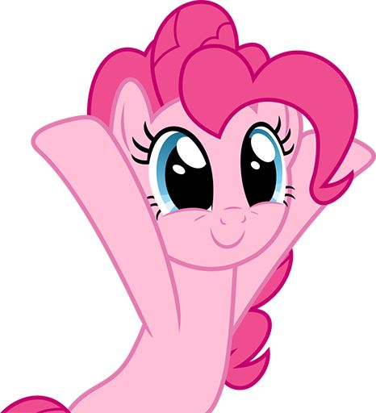

✦
dear aisa,
For my little
party star.
happy 17th birthday, aisuy. another year older, another year to make beautiful memories. semoga di umur yang baru ini brings you lots of happiness and good things, and countless little things that make you smile. you deserve all the good things in this world. aisa! love youu!
enjoy your special day!
with lots of love,Rani ♡
a tiny letter, a big wish ♡